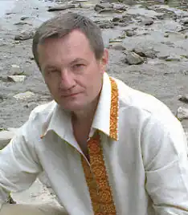

Дмитро Дмитрович Білий народився 25 липня 1967 року, Макіївка, Донецька область. Український письменник, історик, дослідник Кубані, доктор історичних наук, професор. Член Національної Спілки письменників України (2019). Завідувач відділу історичних досліджень Голодомору-геноциду Інституту дослідження Голодомору.
У 1989, очолював молодіжне об'єднання Донецьке історико-етнографічне товариство "Курінь", створене на історичному факультеті Донецького університету. В тому ж році, закінчив з відзнакою історичний факультет Донецького Національного Університету.
З 1993 до 1997 року, працював старшим викладачем на кафедрі Історії України Донецького Національного Університету. В 1997 по 2003 роки — завідувач кафедри Історії та українознавства Донецького юридичного інституту. В 2002 році отримав наукове звання доцента. В 2003-2006 роках — на посаді доцента кафедри соціально-політичних дисциплін Донецького юридичного інституту. З 2006 до 2010 роки, на посаді доцента кафедри українознавства Донецького юридичного інституту. З 2010 по 2014 роки, професор кафедри українознавства в Донецькому юридичному інституті. З листопада 2014 по 2020 рік перебував на посаді професора кафедри хореографії та мистецтвознавства Львівського державного університету фізичної культури, викладав в Українському католицькому університеті. З 2020 року провідний науковий співробітник, завідувач відділу історичних досліджень Голодомору-геноциду Інституту дослідження Голодомору. Автор науково-популярної розвідки "Малиновий Клин" (1994), романів "Басаврюк XX" (2002), "Заложна душа" (2002), "Чорне крило" (2004), "Козацький Оберіг" (2005), "Шлях Срібного Яструба" (2007).